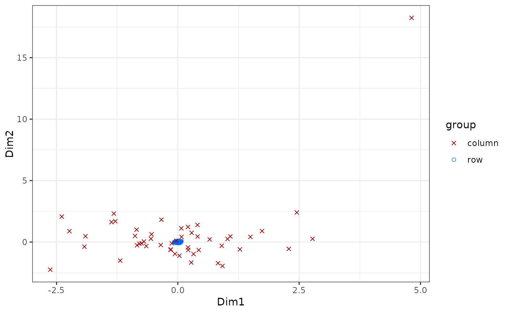

Plot of 2D CA projection of the data.
ca_biplot.RdPlots the first 2 dimensions of the rows and columns in the same plot.
Usage
ca_biplot(
obj,
xdim = 1,
ydim = 2,
princ_coords = 1,
row_labels = NULL,
col_labels = NULL,
type = "ggplot",
col_metadata = NULL,
row_metadata = NULL,
show_all = TRUE,
...
)
# S4 method for class 'cacomp'
ca_biplot(
obj,
xdim = 1,
ydim = 2,
princ_coords = 1,
row_labels = NULL,
col_labels = NULL,
type = "ggplot",
col_metadata = NULL,
row_metadata = NULL,
show_all = TRUE,
...
)
# S4 method for class 'Seurat'
ca_biplot(
obj,
xdim = 1,
ydim = 2,
princ_coords = 1,
row_labels = NULL,
col_labels = NULL,
type = "ggplot",
col_metadata = NULL,
row_metadata = NULL,
show_all = TRUE,
...,
assay = SeuratObject::DefaultAssay(obj),
slot = "counts"
)
# S4 method for class 'SingleCellExperiment'
ca_biplot(
obj,
xdim = 1,
ydim = 2,
princ_coords = 1,
row_labels = NULL,
col_labels = NULL,
type = "ggplot",
col_metadata = NULL,
row_metadata = NULL,
show_all = TRUE,
...,
assay = "counts"
)Arguments
- obj
An object of class "cacomp" with the relevant standardized and principal coordinates calculated, or alternatively an object of class "Seurat" or "SingleCellExperiment" with a dim. reduction named "CA" saved.
- xdim
Integer. The dimension for the x-axis. Default 1.
- ydim
Integer. The dimension for the y-axis. Default 2.
- princ_coords
Integer. If 1 then principal coordinates are used for the rows, if 2 for the columns. Default 1 (rows).
- row_labels
Numeric vector. Indices for the rows for which a label should be added (label should be stored in rownames). Default NULL.
- col_labels
Numeric vector. Indices for the columns for which a label should be added (label should be stored in colnames). Default NULL (no columns).
- type
String. Type of plot to draw. Either "ggplot" or "plotly". Default "ggplot".
- col_metadata
named vector of additional metadata to color points. The names of the elements in col_metadata should correspond to the column names in 'obj'. If NULL columns will be in a single color. Can also specify a metadata column for Seurat/SingleCellExperiment objects.
- row_metadata
named vector of additional metadata to color points. The names of the elements in row_metadata should correspond to the row names in 'obj'. If NULL rows will be in a single color. Can also specify a metadata column for Seurat/SingleCellExperiment objects.
- show_all
logical. If FALSE cells/genes that are not in col_metadata/ row_metadata are not plotted. If *_metadata is NULL, the cell or genes respectively will still be plotted.
- ...
Further arguments.
- assay
SingleCellExperiment assay for recomputation
- slot
Seurat assay slot from which to get matrix.
Details
Choosing type "plotly" will generate an interactive html plot with the package plotly. Type "ggplot" generates a static plot. Depending on whether `princ_coords` is set to 1 or 2 either the principal coordinates of either the rows (1) or the columns (2) are chosen. For the other the standard coordinates are plotted (assymetric biplot). Labels for rows and columns should be stored in the row and column names respectively.
Examples
# Simulate counts
cnts <- mapply(function(x){rpois(n = 500, lambda = x)},
x = sample(1:100, 50, replace = TRUE))
rownames(cnts) <- paste0("gene_", 1:nrow(cnts))
colnames(cnts) <- paste0("cell_", 1:ncol(cnts))
# Run correspondence analysis
ca <- cacomp(obj = cnts, princ_coords = 3)
#> Warning:
#> Parameter top is >nrow(obj) and therefore ignored.
#> No dimensions specified. Setting dimensions to: 9
ca_biplot(ca)
#> Warning: Ignoring unknown aesthetics: text
#> Warning: Ignoring unknown aesthetics: text
